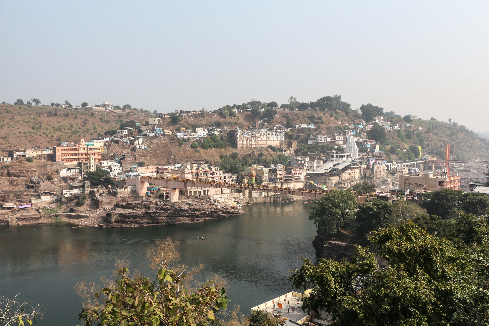

భారతదేశంలోని పన్నెండు పవిత్ర ద్వాదశ జ్యోతిర్లింగాలలో నాల్గవదిగా పూజలందుకుంటున్న అత్యంత మహిమాన్విత శైవక్షేత్రం శ్రీ ఓంకారేశ్వర జ్యోతిర్లింగం.
ఈ దివ్య క్షేత్రం మధ్యప్రదేశ్ రాష్ట్రంలోని ఖాండ్వా జిల్లాలో, పుణ్య పావన నర్మదా నది గర్భంలో ఉన్న మాంధాతా ద్వీపం (శివపురి) పై వెలసింది. అంతరిక్షం లేదా ఆకాశ మార్గం నుండి వీక్షించినప్పుడు ఈ ద్వీపం ప్రాకృతికంగా పవిత్రమైన ప్రణవ నాదం "ఓం" (ॐ) ఆకారంలో కనిపించడం ప్రకృతి మరియు సనాతన ధర్మాల అద్భుత కలయికగా భావిస్తారు.
నర్మదా నదీ తరంగాల పవిత్రత, ఓంకార నాద దివ్య ప్రకంపనలు, శతాబ్దాల శివతపస్సుల శక్తి కలగలసిన ఈ క్షేత్రం సకల పాపహరణ ప్రదాతగా, మోక్షదాయక శైవ తీర్థంగా విరాజిల్లుతోంది.
శ్రీ ఓంకారేశ్వర జ్యోతిర్లింగ దేవాలయం
చతుర్థ జ్యోతిర్లింగ దివ్య క్షేత్రం • మాంధాతా ద్వీపం, మధ్యప్రదేశ్

౧. పరిచయం
౨. క్షేత్ర ప్రాముఖ్యత — ఏక లింగం ద్విధా విభక్తం
శివ పురాణంలోని కోటిరుద్ర సంహిత ప్రకారం, ఓంకారేశ్వర క్షేత్రంలో పరమశివుడు ఒకే జ్యోతిర్లింగ స్వరూపాన్ని రెండుగా విభజించి భక్తులకు అనుగ్రహించాడు:
• శ్రీ ఓంకారేశ్వరుడు (ఓంకార లింగం): నర్మదా నది మధ్యలోని మాంధాతా ద్వీపంలో కొలువైన మూల జ్యోతిర్లింగ స్వరూపం.
• శ్రీ అమరేశ్వరుడు / మమలేశ్వరుడు: నర్మదా నది దక్షిణ ఒడ్డున (ప్రధాన భూభాగంపై) కొలువైన ప్రాచీన దివ్య లింగం.
ఈ రెండు ఆలయాలు ఒకే జ్యోతిర్లింగ తత్త్వానికి రెండు రూపాలుగా పరిగణించబడతాయి. అందువల్ల ఓంకారేశ్వరుడితో పాటు మమలేశ్వరుడిని కూడా దర్శించుకున్నప్పుడే జ్యోతిర్లింగ యాత్రా ఫలం సంపూర్ణమవుతుందని భక్తుల ప్రగాఢ విశ్వాసం.
• శ్రీ ఓంకారేశ్వరుడు (ఓంకార లింగం): నర్మదా నది మధ్యలోని మాంధాతా ద్వీపంలో కొలువైన మూల జ్యోతిర్లింగ స్వరూపం.
• శ్రీ అమరేశ్వరుడు / మమలేశ్వరుడు: నర్మదా నది దక్షిణ ఒడ్డున (ప్రధాన భూభాగంపై) కొలువైన ప్రాచీన దివ్య లింగం.
ఈ రెండు ఆలయాలు ఒకే జ్యోతిర్లింగ తత్త్వానికి రెండు రూపాలుగా పరిగణించబడతాయి. అందువల్ల ఓంకారేశ్వరుడితో పాటు మమలేశ్వరుడిని కూడా దర్శించుకున్నప్పుడే జ్యోతిర్లింగ యాత్రా ఫలం సంపూర్ణమవుతుందని భక్తుల ప్రగాఢ విశ్వాసం.
౩. క్షేత్ర పురాణ గాథలు
ఓంకారేశ్వర క్షేత్ర ఆవిర్భావం గురించి పురాణాలలో మూడు ప్రధాన కథనాలు ప్రసిద్ధి చెందాయి:
౧. వింధ్య పర్వత తపస్సు:
నారద మహర్షి ద్వారా మేరు పర్వత ఔన్నత్యాన్ని విన్న వింధ్య పర్వత రాజు తన గర్వాన్ని వీడి, ఆధ్యాత్మిక ఉన్నతిని సాధించాలనే సంకల్పంతో నర్మదా తీరంలో శివుని గురించి తీవ్ర తపస్సు చేశాడు. పార్థివ లింగాన్ని (మట్టి లింగాన్ని) ఓంకార రూపంలో ప్రతిష్ఠించి ఆరు నెలల పాటు నిశ్చల ధ్యానంలో మునిగిపోయాడు. అతని భక్తికి మెచ్చిన పరమశివుడు ప్రత్యక్షమై, కోరిన వరాన్ని ప్రసాదించాడు. దేవతలు, ఋషుల కోరిక మేరకు లోక రక్షణార్థం శివుడు తన దివ్య జ్యోతిని రెండుగా చేసి, ద్వీపంలో ఓంకారేశ్వరుడిగా, తీరంలో అమరేశ్వరుడిగా శాశ్వతంగా నిలిచిపోయాడు.
౨. మాంధాత చక్రవర్తి ఆరాధన:
సూర్యవంశపు ఇక్ష్వాకు చక్రవర్తి అయిన మాంధాత ఇక్కడే పరమశివుని గురించి ఘోర తపస్సు ఆచరించాడు. పరమేశ్వరుడు ప్రసన్నుడై ఈ ద్వీపంలో జ్యోతిర్లింగంగా కొలువుదీరడంతో, ఆ రాజు పేరు మీదుగా ఈ ప్రాంతానికి మాంధాతా ద్వీపం అనే పేరు స్థిరపడింది. ఆయన కుమారులైన అంబరీషుడు, ముచుకుందుడు కూడా ఇక్కడే తపస్సు చేసి మోక్షం పొందారని కథనం.
౩. దేవాసుర సంగ్రామం:
దేవదానవ యుద్ధంలో రాక్షసుల చేతిలో పరాజయం పొందిన దేవతలు నిస్సహాయులై ఈ పవిత్ర స్థలంలో శివుని శరణు వేడారు. శివుడు ఓంకారేశ్వరుని రూపంలో అవతరించి అసురులను సంహరించి ధర్మాన్ని నిలబెట్టాడు.
౧. వింధ్య పర్వత తపస్సు:
నారద మహర్షి ద్వారా మేరు పర్వత ఔన్నత్యాన్ని విన్న వింధ్య పర్వత రాజు తన గర్వాన్ని వీడి, ఆధ్యాత్మిక ఉన్నతిని సాధించాలనే సంకల్పంతో నర్మదా తీరంలో శివుని గురించి తీవ్ర తపస్సు చేశాడు. పార్థివ లింగాన్ని (మట్టి లింగాన్ని) ఓంకార రూపంలో ప్రతిష్ఠించి ఆరు నెలల పాటు నిశ్చల ధ్యానంలో మునిగిపోయాడు. అతని భక్తికి మెచ్చిన పరమశివుడు ప్రత్యక్షమై, కోరిన వరాన్ని ప్రసాదించాడు. దేవతలు, ఋషుల కోరిక మేరకు లోక రక్షణార్థం శివుడు తన దివ్య జ్యోతిని రెండుగా చేసి, ద్వీపంలో ఓంకారేశ్వరుడిగా, తీరంలో అమరేశ్వరుడిగా శాశ్వతంగా నిలిచిపోయాడు.
౨. మాంధాత చక్రవర్తి ఆరాధన:
సూర్యవంశపు ఇక్ష్వాకు చక్రవర్తి అయిన మాంధాత ఇక్కడే పరమశివుని గురించి ఘోర తపస్సు ఆచరించాడు. పరమేశ్వరుడు ప్రసన్నుడై ఈ ద్వీపంలో జ్యోతిర్లింగంగా కొలువుదీరడంతో, ఆ రాజు పేరు మీదుగా ఈ ప్రాంతానికి మాంధాతా ద్వీపం అనే పేరు స్థిరపడింది. ఆయన కుమారులైన అంబరీషుడు, ముచుకుందుడు కూడా ఇక్కడే తపస్సు చేసి మోక్షం పొందారని కథనం.
౩. దేవాసుర సంగ్రామం:
దేవదానవ యుద్ధంలో రాక్షసుల చేతిలో పరాజయం పొందిన దేవతలు నిస్సహాయులై ఈ పవిత్ర స్థలంలో శివుని శరణు వేడారు. శివుడు ఓంకారేశ్వరుని రూపంలో అవతరించి అసురులను సంహరించి ధర్మాన్ని నిలబెట్టాడు.
౪. ఆలయ చరిత్ర & రాజవంశాల సేవలు
ఓంకారేశ్వర్ ప్రాంతం వేద కాలం నుండి నిరంతర శైవ ఆరాధనా కేంద్రంగా విలసిల్లుతోంది. స్కాంద పురాణంలోని రేవ ఖండం, శివ పురాణం మరియు మత్స్య పురాణాలలో ఈ క్షేత్ర ప్రశస్తి విస్తృతంగా లభిస్తుంది.
చారిత్రకంగా ౧౦ నుండి ౧౩వ శతాబ్దాల మధ్య మాళవ ప్రాంతాన్ని పరిపాలించిన పరమార వంశ రాజులు ఈ ఆలయ నిర్మాణానికి విశేషమైన శిల్ప కళా రూపాలను సమకూర్చారు. అనంతరం చౌహాన్ రాజులు, భోపాల్ నవాబుల కాలంలోనూ ఇది ప్రధాన క్షేత్రంగా కొనసాగింది.
౧౮వ శతాబ్దంలో పుణ్యశ్లోక రాణి అహల్యాబాయి హోల్కర్ ఓంకారేశ్వర్ మరియు మమలేశ్వర్ ఆలయాల జీర్ణోద్ధరణకు బృహత్తర సేవలు చేశారు. ప్రతిరోజూ వేలాది మంది బ్రాహ్మణుల ద్వారా పార్థివ శివలింగాల పూజను నిర్వహించే శాశ్వత వ్యవస్థను ఆమె నెలకొల్పారు, అది నేటికీ ట్రస్ట్ ఆధ్వర్యంలో నిర్విఘ్నంగా కొనసాగుతోంది.
చారిత్రకంగా ౧౦ నుండి ౧౩వ శతాబ్దాల మధ్య మాళవ ప్రాంతాన్ని పరిపాలించిన పరమార వంశ రాజులు ఈ ఆలయ నిర్మాణానికి విశేషమైన శిల్ప కళా రూపాలను సమకూర్చారు. అనంతరం చౌహాన్ రాజులు, భోపాల్ నవాబుల కాలంలోనూ ఇది ప్రధాన క్షేత్రంగా కొనసాగింది.
౧౮వ శతాబ్దంలో పుణ్యశ్లోక రాణి అహల్యాబాయి హోల్కర్ ఓంకారేశ్వర్ మరియు మమలేశ్వర్ ఆలయాల జీర్ణోద్ధరణకు బృహత్తర సేవలు చేశారు. ప్రతిరోజూ వేలాది మంది బ్రాహ్మణుల ద్వారా పార్థివ శివలింగాల పూజను నిర్వహించే శాశ్వత వ్యవస్థను ఆమె నెలకొల్పారు, అది నేటికీ ట్రస్ట్ ఆధ్వర్యంలో నిర్విఘ్నంగా కొనసాగుతోంది.
౫. ఆలయ నిర్మాణ శైలి & విశేషాలు
ఓంకారేశ్వర్ ఆలయం ఉత్తర భారత నాగర శిల్పకళా రీతికి అత్యున్నత ప్రతీక. ఈ ఆలయ విశేషాలు:
• పంచ తల నిర్మాణం (ఐదు అంతస్తులు): ఆలయంలో ఐదు అంతస్తులు ఉండగా, ప్రతి అంతస్తులో ఒక్కో దివ్య శివమూర్తి కొలువై ఉన్నారు:
౧. నేలమాళిగ / గర్భగుడి: మూలవిరాట్ శ్రీ ఓంకారేశ్వర జ్యోతిర్లింగం.
౨. మొదటి అంతస్తు: శ్రీ మహాకాళేశ్వర లింగం.
౩. రెండవ అంతస్తు: శ్రీ సిద్ధనాథ లింగం.
౪. మూడవ అంతస్తు: శ్రీ గుప్తేశ్వర లింగం.
౫. నాల్గవ అంతస్తు: శ్రీ ధ్వజేశ్వర లింగం.
• సభా మండపం: ఆలయ సభా మండపం సుమారు ౬౦ సుందర శిల్పకళా స్తంభాలపై నిలిచి ఉంది. ప్రతి స్తంభంపై పురాణ దృశ్యాలు, నృత్య భంగిమలు, దేవతామూర్తులు అద్భుతంగా చెక్కబడ్డాయి.
• స్వయంభూ జ్యోతిర్లింగం: ఇక్కడి జ్యోతిర్లింగం సాధారణ లింగాల వలె కాకుండా, నేలలో సహజసిద్ధంగా వెలసిన శిలారూపంగా దర్శనమిస్తుంది. దీని చుట్టూ నిరంతరం నర్మదా జలం ప్రవహిస్తూ ఉండటం పరమ పవిత్ర విశేషం.
• పంచ తల నిర్మాణం (ఐదు అంతస్తులు): ఆలయంలో ఐదు అంతస్తులు ఉండగా, ప్రతి అంతస్తులో ఒక్కో దివ్య శివమూర్తి కొలువై ఉన్నారు:
౧. నేలమాళిగ / గర్భగుడి: మూలవిరాట్ శ్రీ ఓంకారేశ్వర జ్యోతిర్లింగం.
౨. మొదటి అంతస్తు: శ్రీ మహాకాళేశ్వర లింగం.
౩. రెండవ అంతస్తు: శ్రీ సిద్ధనాథ లింగం.
౪. మూడవ అంతస్తు: శ్రీ గుప్తేశ్వర లింగం.
౫. నాల్గవ అంతస్తు: శ్రీ ధ్వజేశ్వర లింగం.
• సభా మండపం: ఆలయ సభా మండపం సుమారు ౬౦ సుందర శిల్పకళా స్తంభాలపై నిలిచి ఉంది. ప్రతి స్తంభంపై పురాణ దృశ్యాలు, నృత్య భంగిమలు, దేవతామూర్తులు అద్భుతంగా చెక్కబడ్డాయి.
• స్వయంభూ జ్యోతిర్లింగం: ఇక్కడి జ్యోతిర్లింగం సాధారణ లింగాల వలె కాకుండా, నేలలో సహజసిద్ధంగా వెలసిన శిలారూపంగా దర్శనమిస్తుంది. దీని చుట్టూ నిరంతరం నర్మదా జలం ప్రవహిస్తూ ఉండటం పరమ పవిత్ర విశేషం.
౬. ముఖ్య దర్శనీయ స్థలాలు
ఓంకారేశ్వర్ క్షేత్రంలో దర్శించవలసిన ముఖ్యమైన పవిత్ర స్థలాలు:
• శ్రీ ఓంకారేశ్వర జ్యోతిర్లింగం: మాంధాతా ద్వీపంపై ఉన్న మూల ప్రధాన శైవాలయం.
• శ్రీ మమలేశ్వర్ (అమరేశ్వర్) ఆలయం: నర్మదా దక్షిణ ఒడ్డున ఉన్న పురాతన ఆలయం. అహల్యాబాయి హోల్కర్ కాలం నాటి పార్థివ పూజా పీఠం ఇక్కడే ఉంది.
• శ్రీ గోవింద భగవత్పాదుల గుహ: జగద్గురు ఆదిశంకరాచార్యులు తన గురువైన గోవింద భగవత్పాదుల దర్శనం చేసుకుని, అద్వైత సన్న్యాస దీక్ష పొందిన పరమ పవిత్ర గుహ. నర్మదా వరదను శంకరాచార్యులు తన కమండలంలోకి బంధించిన చారిత్రక ఘట్టం ఇక్కడే జరిగింది.
• గౌరీ సోమనాథ ఆలయం: ద్వీపంలో ఎత్తైన ప్రదేశంలో ఉన్న విశేష ఆలయం. ఇక్కడ సుమారు ౬ అడుగుల ఎత్తైన నల్లరాతి శివలింగం మరియు భారీ నంది దర్శనమిస్తాయి.
• సిద్ధనాథ దేవాలయం: ౧౩వ శతాబ్దపు శిల్పకళా అద్భుతం. దీని స్తంభాలపై చెక్కిన ఏనుగుల శిల్పాలు మరియు పురాణ ప్రతిమలు అత్యంత సుందరమైనవి.
• నర్మదా–కావేరి సంగమం (చక్రతీర్థం): నర్మదా మరియు ఇక్కడి స్థానిక కావేరి నదుల సంగమ పవిత్ర స్థలి, ఇక్కడ స్నానం చేయడం మహాపుణ్యప్రదమని భావిస్తారు.
• ఓంకార పరిక్రమ (మాంధాత ద్వీప ప్రదక్షిణ): ద్వీపం చుట్టూ ఉన్న సుమారు ౭ కిలోమీటర్ల ప్రదక్షిణా మార్గం. శతాబ్దాలుగా నర్మదా పరిక్రమ యాత్రికులు, సాధువులు ఈ మార్గంలో నడిచి ప్రదక్షిణ చేస్తారు.
• శ్రీ ఓంకారేశ్వర జ్యోతిర్లింగం: మాంధాతా ద్వీపంపై ఉన్న మూల ప్రధాన శైవాలయం.
• శ్రీ మమలేశ్వర్ (అమరేశ్వర్) ఆలయం: నర్మదా దక్షిణ ఒడ్డున ఉన్న పురాతన ఆలయం. అహల్యాబాయి హోల్కర్ కాలం నాటి పార్థివ పూజా పీఠం ఇక్కడే ఉంది.
• శ్రీ గోవింద భగవత్పాదుల గుహ: జగద్గురు ఆదిశంకరాచార్యులు తన గురువైన గోవింద భగవత్పాదుల దర్శనం చేసుకుని, అద్వైత సన్న్యాస దీక్ష పొందిన పరమ పవిత్ర గుహ. నర్మదా వరదను శంకరాచార్యులు తన కమండలంలోకి బంధించిన చారిత్రక ఘట్టం ఇక్కడే జరిగింది.
• గౌరీ సోమనాథ ఆలయం: ద్వీపంలో ఎత్తైన ప్రదేశంలో ఉన్న విశేష ఆలయం. ఇక్కడ సుమారు ౬ అడుగుల ఎత్తైన నల్లరాతి శివలింగం మరియు భారీ నంది దర్శనమిస్తాయి.
• సిద్ధనాథ దేవాలయం: ౧౩వ శతాబ్దపు శిల్పకళా అద్భుతం. దీని స్తంభాలపై చెక్కిన ఏనుగుల శిల్పాలు మరియు పురాణ ప్రతిమలు అత్యంత సుందరమైనవి.
• నర్మదా–కావేరి సంగమం (చక్రతీర్థం): నర్మదా మరియు ఇక్కడి స్థానిక కావేరి నదుల సంగమ పవిత్ర స్థలి, ఇక్కడ స్నానం చేయడం మహాపుణ్యప్రదమని భావిస్తారు.
• ఓంకార పరిక్రమ (మాంధాత ద్వీప ప్రదక్షిణ): ద్వీపం చుట్టూ ఉన్న సుమారు ౭ కిలోమీటర్ల ప్రదక్షిణా మార్గం. శతాబ్దాలుగా నర్మదా పరిక్రమ యాత్రికులు, సాధువులు ఈ మార్గంలో నడిచి ప్రదక్షిణ చేస్తారు.
౭. నిత్య పూజలు & విశేష ఉత్సవాలు
ఆలయంలో నిత్యం నాలుగు ప్రధాన ఆరతులు మరియు విశేష పూజలు నిర్వహించబడతాయి:
• మంగళ హారతి: ఉదయం 5:00 గంటలకు స్వామివారి తొలి ఆరాధన.
• మధ్యాహ్న భోగ హారతి: మధ్యాహ్నం 12:20 నుండి 1:20 వరకు స్వామికి మహానివేదన.
• సంధ్యా శృంగార హారతి: సాయంత్రం సమయంలో స్వామివారికి జరిగే విశేష పుష్పాలంకార దర్శనం.
• శయన హారతి: రాత్రి 8:30 నుండి 9:00 వరకు స్వామివారికి శయనోత్సవం మరియు చౌపాడ్ (పాచికల ఆట) అలంకరణ.
ముఖ్య పర్వదినాలు:
• శ్రావణ మాస ఉత్సవాలు: ప్రతి సోమవారం స్వామివారి పంచముఖ వెండి విగ్రహాన్ని పల్లకీలో ఊరేగించి, నర్మదా నదిలో పవిత్ర జలవిహారం (నౌకా విహారం) జరుపుతారు.
• మహాశివరాత్రి: ఐదు రోజుల పాటు లక్షలాది మంది భక్తులతో అంగరంగ వైభవంగా జరిగే బ్రహ్మోత్సవాలు.
• కార్తీక పూర్ణిమ & నర్మదా జయంతి: నర్మదా నది ఘాట్లపై లక్షలాది దీపాల వెలుగులతో జరిగే మహా దీపోత్సవం.
• మంగళ హారతి: ఉదయం 5:00 గంటలకు స్వామివారి తొలి ఆరాధన.
• మధ్యాహ్న భోగ హారతి: మధ్యాహ్నం 12:20 నుండి 1:20 వరకు స్వామికి మహానివేదన.
• సంధ్యా శృంగార హారతి: సాయంత్రం సమయంలో స్వామివారికి జరిగే విశేష పుష్పాలంకార దర్శనం.
• శయన హారతి: రాత్రి 8:30 నుండి 9:00 వరకు స్వామివారికి శయనోత్సవం మరియు చౌపాడ్ (పాచికల ఆట) అలంకరణ.
ముఖ్య పర్వదినాలు:
• శ్రావణ మాస ఉత్సవాలు: ప్రతి సోమవారం స్వామివారి పంచముఖ వెండి విగ్రహాన్ని పల్లకీలో ఊరేగించి, నర్మదా నదిలో పవిత్ర జలవిహారం (నౌకా విహారం) జరుపుతారు.
• మహాశివరాత్రి: ఐదు రోజుల పాటు లక్షలాది మంది భక్తులతో అంగరంగ వైభవంగా జరిగే బ్రహ్మోత్సవాలు.
• కార్తీక పూర్ణిమ & నర్మదా జయంతి: నర్మదా నది ఘాట్లపై లక్షలాది దీపాల వెలుగులతో జరిగే మహా దీపోత్సవం.
౮. ఆధ్యాత్మిక విశిష్టత
ఓంకారేశ్వర్ కేవలం ఒక భౌతిక ఆలయం మాత్రమే కాదు; అది నాద బ్రహ్మ స్వరూపమైన ప్రణవానికి శివతత్త్వానికి ఉన్న అభేద బంధాన్ని చాటిచెప్పే దివ్య ధ్యాన క్షేత్రం.
ఆదిశంకరులు గురుముఖతః 'తత్త్వమసి', 'శివోహం' మహావాక్యాల ఉపదేశాన్ని పొంది, దేశవ్యాప్తంగా సనాతన ధర్మ పునరుజ్జీవనానికి నాంది పలికిన పవిత్ర భూమి ఇది. నర్మదా నదీ ప్రదక్షిణ (నర్మదా పరిక్రమ) చేసే లక్షలాది సాధకులకు ఓంకారేశ్వర్ ప్రారంభ మరియు ముగింపు బిందువుగా సర్వోన్నత గౌరవాన్ని అందుకుంటోంది.
ఆదిశంకరులు గురుముఖతః 'తత్త్వమసి', 'శివోహం' మహావాక్యాల ఉపదేశాన్ని పొంది, దేశవ్యాప్తంగా సనాతన ధర్మ పునరుజ్జీవనానికి నాంది పలికిన పవిత్ర భూమి ఇది. నర్మదా నదీ ప్రదక్షిణ (నర్మదా పరిక్రమ) చేసే లక్షలాది సాధకులకు ఓంకారేశ్వర్ ప్రారంభ మరియు ముగింపు బిందువుగా సర్వోన్నత గౌరవాన్ని అందుకుంటోంది.
౯. ఆసక్తికర విశేషాలు
• నర్మదేశ్వర బాణలింగాలు: "నర్మదా కే కంకర్ సబ్ శంకర్" అంటారు — నర్మదా నదిలో సహజసిద్ధంగా దొరికే ప్రతీ గుండ్రటి రాయి పరమేశ్వరుని బాణలింగ స్వరూపంగా భావించబడుతుంది.
• పార్థివ లింగ పూజా సంప్రదాయం: అహల్యాబాయి హోల్కర్ కాలం నుంచి నేటికీ ప్రతిరోజూ వేలాది చిన్న మట్టి శివలింగాలను భక్తితో తయారుచేసి పూజించి, నర్మదా జలాల్లో నిమజ్జనం చేసే పవిత్ర సంప్రదాయం కొనసాగుతోంది.
• సహజ ఓంకార భౌగోళిక రూపం: ఉపగ్రహ చిత్రాలలో కూడా మాంధాతా ద్వీపం, నర్మదా నది వంపులు కలిసి ఖచ్చితమైన 'ఓం' (ॐ) ఆకారాన్ని పోలి ఉండటం భక్తులలో అచంచల భక్తిభావాన్ని నింపుతుంది.
• చౌపాడ్ శయన సంప్రదాయం: రాత్రి శయన హారతి అనంతరం గర్భగుడిలో శివపార్వతుల కొలువు కోసం పాచికల బల్ల (చౌపాడ్) ను అమరుస్తారు. ఉదయం తలుపులు తెరిచేసరికి పాచికల స్థానాలు మారి ఉంటాయని ఇక్కడి అర్చకుల ప్రాచీన అనుభవం.
• పార్థివ లింగ పూజా సంప్రదాయం: అహల్యాబాయి హోల్కర్ కాలం నుంచి నేటికీ ప్రతిరోజూ వేలాది చిన్న మట్టి శివలింగాలను భక్తితో తయారుచేసి పూజించి, నర్మదా జలాల్లో నిమజ్జనం చేసే పవిత్ర సంప్రదాయం కొనసాగుతోంది.
• సహజ ఓంకార భౌగోళిక రూపం: ఉపగ్రహ చిత్రాలలో కూడా మాంధాతా ద్వీపం, నర్మదా నది వంపులు కలిసి ఖచ్చితమైన 'ఓం' (ॐ) ఆకారాన్ని పోలి ఉండటం భక్తులలో అచంచల భక్తిభావాన్ని నింపుతుంది.
• చౌపాడ్ శయన సంప్రదాయం: రాత్రి శయన హారతి అనంతరం గర్భగుడిలో శివపార్వతుల కొలువు కోసం పాచికల బల్ల (చౌపాడ్) ను అమరుస్తారు. ఉదయం తలుపులు తెరిచేసరికి పాచికల స్థానాలు మారి ఉంటాయని ఇక్కడి అర్చకుల ప్రాచీన అనుభవం.
౧౦. యాత్రికులకు సమాచారం & రవాణా సౌకర్యాలు
భౌగోళిక స్థానం: ఓంకారేశ్వర్, ఖాండ్వా జిల్లా, మధ్యప్రదేశ్ (పిన్ కోడ్: 450595).
చేరుకునే మార్గాలు:
• విమాన మార్గం: ఇండోర్లోని దేవీ అహల్యాబాయి హోల్కర్ అంతర్జాతీయ విమానాశ్రయం (IDR) సమీప ప్రధాన విమానాశ్రయం (సుమారు 77 కి.మీ). అక్కడి నుంచి క్యాబ్లు లేదా బస్సులు నిరంతరం అందుబాటులో ఉంటాయి.
• రైలు మార్గం: సమీప ప్రధాన రైల్వే జంక్షన్లు ఖాండ్వా (సుమారు 70 కి.మీ) మరియు ఇండోర్ (సుమారు 80 కి.మీ). ఓంకారేశ్వర్ రోడ్ (మోర్టక్కా) రైల్వే స్టేషన్ 12 కి.మీ దూరంలో ఉంది.
• రోడ్డు మార్గం: ఇండోర్, ఉజ్జయిని, ఖాండ్వా, భోపాల్ నగరాల నుండి మధ్యప్రదేశ్ ఆర్టీసీ బస్సులు మరియు ప్రైవేట్ వాహనాలు పుష్కలంగా ఉన్నాయి.
• ద్వీప ప్రవేశం: నర్మదా నది దాటి ఆలయానికి వెళ్లడానికి నడక వంతెన (ఝూలా పుల్ / మాంధాత సేతు) మరియు మోటార్ బోట్ సేవలు నిరంతరం అందుబాటులో ఉంటాయి.
చేరుకునే మార్గాలు:
• విమాన మార్గం: ఇండోర్లోని దేవీ అహల్యాబాయి హోల్కర్ అంతర్జాతీయ విమానాశ్రయం (IDR) సమీప ప్రధాన విమానాశ్రయం (సుమారు 77 కి.మీ). అక్కడి నుంచి క్యాబ్లు లేదా బస్సులు నిరంతరం అందుబాటులో ఉంటాయి.
• రైలు మార్గం: సమీప ప్రధాన రైల్వే జంక్షన్లు ఖాండ్వా (సుమారు 70 కి.మీ) మరియు ఇండోర్ (సుమారు 80 కి.మీ). ఓంకారేశ్వర్ రోడ్ (మోర్టక్కా) రైల్వే స్టేషన్ 12 కి.మీ దూరంలో ఉంది.
• రోడ్డు మార్గం: ఇండోర్, ఉజ్జయిని, ఖాండ్వా, భోపాల్ నగరాల నుండి మధ్యప్రదేశ్ ఆర్టీసీ బస్సులు మరియు ప్రైవేట్ వాహనాలు పుష్కలంగా ఉన్నాయి.
• ద్వీప ప్రవేశం: నర్మదా నది దాటి ఆలయానికి వెళ్లడానికి నడక వంతెన (ఝూలా పుల్ / మాంధాత సేతు) మరియు మోటార్ బోట్ సేవలు నిరంతరం అందుబాటులో ఉంటాయి.
౧౧. దర్శన వేళలు & అధికారిక సమాచారం
సాధారణ దర్శన సమయాలు:
ఉదయం 5:00 నుండి రాత్రి 9:30 వరకు (మధ్యాహ్న భోగ సమయం మినహా).
అధికారిక వెబ్సైట్:
శ్రీ ఓంకారేశ్వర జ్యోతిర్లింగ దేవస్థానం (shriomkareshwar.org)
అధికారిక పోర్టల్ ద్వారా ప్రత్యేక దర్శన పాస్లు, అభిషేకం మరియు పూజా సేవల ఆన్లైన్ బుకింగ్, దేవస్థాన ధర్మశాల గదుల రిజర్వేషన్ వివరాలను ముందస్తుగా పొందవచ్చు.
ఉదయం 5:00 నుండి రాత్రి 9:30 వరకు (మధ్యాహ్న భోగ సమయం మినహా).
అధికారిక వెబ్సైట్:
శ్రీ ఓంకారేశ్వర జ్యోతిర్లింగ దేవస్థానం (shriomkareshwar.org)
అధికారిక పోర్టల్ ద్వారా ప్రత్యేక దర్శన పాస్లు, అభిషేకం మరియు పూజా సేవల ఆన్లైన్ బుకింగ్, దేవస్థాన ధర్మశాల గదుల రిజర్వేషన్ వివరాలను ముందస్తుగా పొందవచ్చు.
౧౨. ఆధార గ్రంథాలు
• శివ పురాణం — కోటిరుద్ర సంహిత (ఓంకారేశ్వర–అమరేశ్వర జ్యోతిర్లింగ వర్ణన)
• స్కాంద పురాణం — రేవ ఖండం (నర్మదా మాహాత్మ్యం)
• వాయు పురాణం మరియు మత్స్య పురాణం
• జగద్గురు ఆదిశంకరాచార్య చరిత్ర మరియు మాధవీయ శంకర దిగ్విజయం
• మధ్యప్రదేశ్ పర్యాటక అభివృద్ధి సంస్థ (MP Tourism) మరియు దేవస్థాన ట్రస్ట్ అధికారిక సమాచారం
• స్కాంద పురాణం — రేవ ఖండం (నర్మదా మాహాత్మ్యం)
• వాయు పురాణం మరియు మత్స్య పురాణం
• జగద్గురు ఆదిశంకరాచార్య చరిత్ర మరియు మాధవీయ శంకర దిగ్విజయం
• మధ్యప్రదేశ్ పర్యాటక అభివృద్ధి సంస్థ (MP Tourism) మరియు దేవస్థాన ట్రస్ట్ అధికారిక సమాచారం
౧౩. ముగింపు
శ్రీ ఓంకారేశ్వర జ్యోతిర్లింగం కేవలం ఒక పురాతన శైవ దేవాలయం మాత్రమే కాదు; అది సమస్త సృష్టికి మూలమైన ప్రణవ నాదం ప్రత్యక్ష శివరూపమై ప్రకాశిస్తున్న దివ్య జ్ఞాన తీర్థం.
నర్మదా నదీ పవిత్ర జలాల్లో స్నానమాచరించి, ప్రణవాకార మాంధాతా ద్వీపంలో పరమేశ్వరుని నిశ్చల మనస్సుతో ధ్యానించే భక్తులకు జన్మజన్మాంతరాల పాపాలు నశించి, అంతఃశ్శాంతి, జ్ఞానసిద్ధి, పరమశివుని శాశ్వత అనుగ్రహం కలుగుతాయి.
"ఓంకార రూపంలో సకల చరాచరాలలో నిండివున్న పరమేశ్వరుని స్మరిస్తూ, ధర్మ మార్గంలో పయనించడమే ఓంకారేశ్వర క్షేత్ర దర్శన పరమార్థం."
నర్మదా నదీ పవిత్ర జలాల్లో స్నానమాచరించి, ప్రణవాకార మాంధాతా ద్వీపంలో పరమేశ్వరుని నిశ్చల మనస్సుతో ధ్యానించే భక్తులకు జన్మజన్మాంతరాల పాపాలు నశించి, అంతఃశ్శాంతి, జ్ఞానసిద్ధి, పరమశివుని శాశ్వత అనుగ్రహం కలుగుతాయి.
"ఓంకార రూపంలో సకల చరాచరాలలో నిండివున్న పరమేశ్వరుని స్మరిస్తూ, ధర్మ మార్గంలో పయనించడమే ఓంకారేశ్వర క్షేత్ర దర్శన పరమార్థం."
✦ సర్వే జనాః సుఖినో భవంతు • ఓం నమః శివాయ ✦